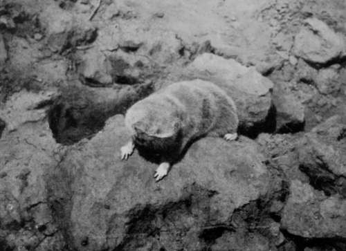
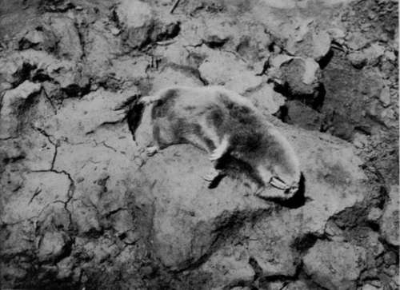
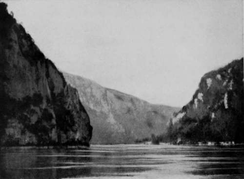
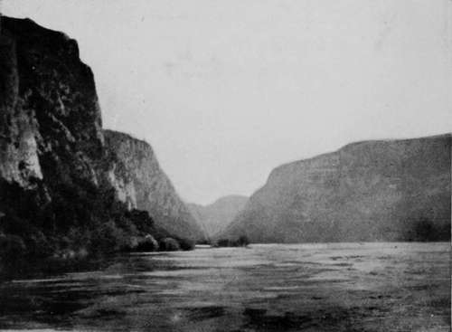
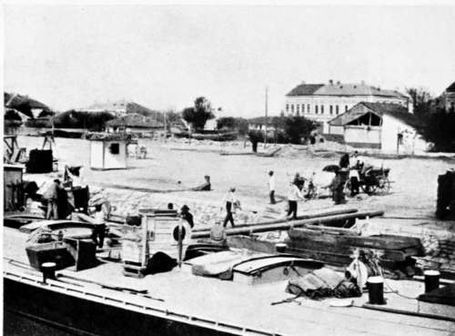
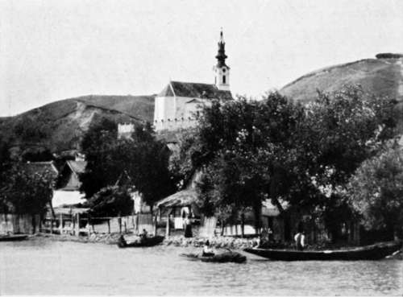

Collecting In The Dobrudscha. Part 14
Description
This section is from the book "Bird-Hunting Through Wild Europe", by R. B. Lodge. Also available from Amazon: Bird-Hunting Through Wild Europe.
Collecting In The Dobrudscha. Part 14
1 Tausende und Tausende von Pelicanen mussen hier gewesen sein ; Cormorane und Phalacr. pygm.
Spalax Typhlus
It fairly made my mouth water when I read this letter, to think that we had missed such a gathering of birds. Though they will probably nest in the same place this year, I shall not be there to see, and to photograph. But Rettig will, and I expect to have a glowing account of his doings there before long.
While at Malcoci I had an opportunity of photographing a dead specimen of that curious animal, Spalax typhlus, which was brought in to Rettig by a boy. This rodent has no visible eyes, at least I could find none on examining it (but I didn't dissect it), and is supposed to be blind. It never comes to the surface, but burrows among the roots of plants, especially potatoes, on which it feeds. The photographs show the extraordinary development of the gnawing teeth.
We had a day or two's rest after our exertions in the Balta, then I packed up my belongings and started homewards. The heavy luggage was sent round by sea, including a huge case of bird-skins. A box of eggs I took with me. Besides these, cases of eggs and skins had been previously forwarded from Durazzo and Budapest. (For a list of species met with, and specimens of eggs and skins procured, see Appendix.)
The homeward journey was made by steamer up the Danube as far as Vienna, a voyage of about a week, I was anxious to see something more of this great river, and more especially to have an opportunity of seeing Servia and Bulgaria. Besides, I had a lively remembrance of the discomfort of the long railway journey I had last year from Galatz to London in July-four days and nights in a stuffy second-class carriage, so crowded that I was not able to stretch my legs the whole way, day or night. Compared with this uncomfortable state of things, travelling by steamer was luxurious, if slow.
I should have liked to land at some of the picturesque little riverside villages in Servia and Bulgaria, especially the former, but time did not permit, and all I could do was to attempt snapshots as the steamer slowed up when about to stop. Objects of interest were not wanting as we forged ahead against the strong current; sometimes a Sea Eagle could be seen watching for his prey on a dead stump, or a willow-tree overhanging the water; sometimes a group of Herons and Ibises were passed ; historic castles and the scenes of ancient battles mingled with more peaceful sights such as the curious boat-mills floating in the quieter backwaters, or groups of peasants in quaint costumes going in procession to some religious shrine or festival. In the neighbourhood of the famous Iron Gates, the scenery is particularly fine and impressive, far finer than anything I have seen on the Rhine. Here the river abandons its usual majestic but somewhat monotonous course, and makes sudden turns and twists through narrow gorges. Rocks of brilliant colours, now bright red, now a creamy white, like marble, rise abruptly in perpendicular pinnacles and fantastic spires.
Scenery near the iron gates
On the south side may be seen, hewn into the rock which overhangs the river, the old Roman road made by Trajan. These rocky cliffs and perpendicular heights should be interesting to geologists. The strata in some places appear to be twisted and contorted to an extraordinary degree. The rocks in consequence present such a curious appearance that I attempted to photograph them in passing ; but it is almost impossible to photograph such detail from a moving steamer, and the results were quite worthless.
After passing Belgrade, which happened after dark, I interested myself in identifying the places visited by Prince Rudolf in his memorable expedition down the Danube. Since that date, 1878, many changes seem to have taken place, which is not surprising, for the farthest point reached by him in his fifteen days' expedition is only twenty hours by steamer from Budapest.
Of the Fruska-gora I can say nothing, for it is too remote from the river ; but of the other places I fear that an ornithologist rash enough to visit them expecting to find Sea Eagles, Black Storks, and Ospreys would be doomed to disappointment. It is possible, of course, that a few birds may still exist in the more remote parts, and in the solitudes of the marshy woods and islands, but it would be quite hopeless to expect to find them in the abundance of thirty years ago. The Osprey, indeed, constantly mentioned by the Crown Prince as being found on the Danube everywhere in great abundance, is now very rare. Why, I do not know, but I failed to see this bird at all; and though I made inquiries about it wherever I went, nobody seemed to know anything of it. One would think that in the solitudes of the immense district of the Dobrudscha, where all the conditions seem favourable to its habits, it would find congenial hunting-grounds and nesting-places, but such is not the case. Even in the lagoons of Albania, where birds are absolutely unmolested by the inhabitants, I never saw one, and Herr Reiser informed me that it was extremely rare in Bosnia and the surrounding countries.
Though I kept a good look-out during this voyage up the river-it was, in fact, all I had to do to pass the time-there were but few birds noticed above Belgrade, and those few only of common species, like Cormorants, Grey Herons, Ducks, or the smaller Hawks, such as Hobbies and Kestrels. I saw no Eagles or any of the larger birds of prey, which I had been accustomed to see almost daily on the lower parts of the Danube.
Loading Maize Lighters At Rustchuk
Hungarian Village On The Danube
The journey home by train was spoilt by a stupid German porter, who put me into the Hook of Holland train instead of the Calais-Dover at Cologne-a most irritating mistake to happen at the very last day, after knocking about for six months through many wild countries without any mishap.
Thus ended an expedition full of interest, in spite of some occasional hardship and discomfort and constant and continual hard work. For bird and egg collecting, combined with photography, in wild countries, is 110 child's play, and requires absolute fitness in condition and general health, and plenty of enthusiasm for the work, without which it is impossible to stand the strain and bodily and mental fatigue.
Continue to: